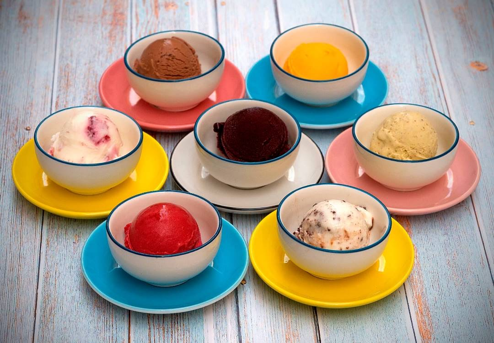
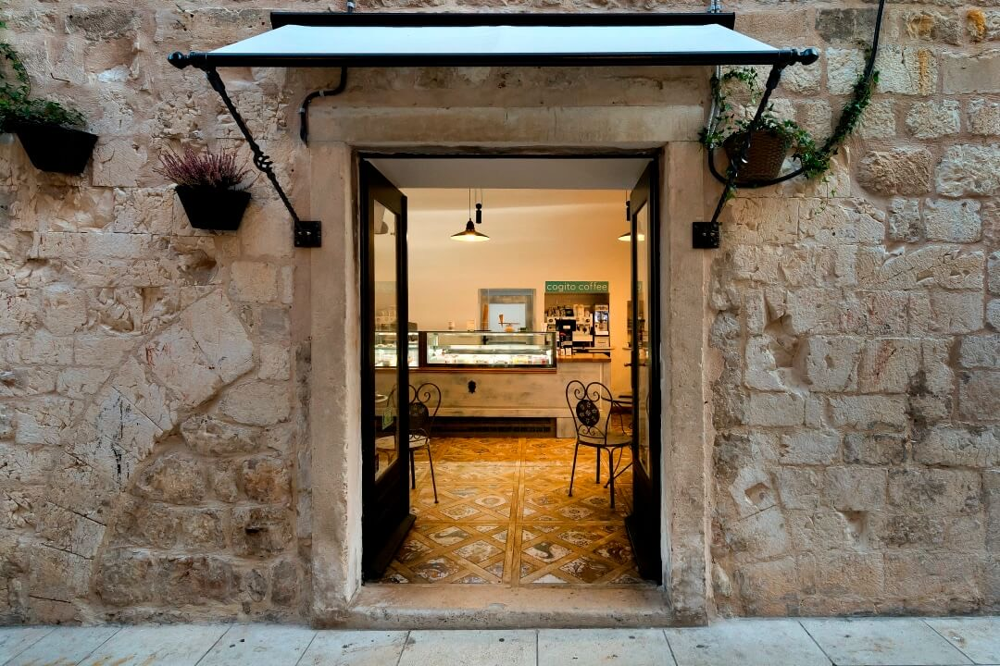
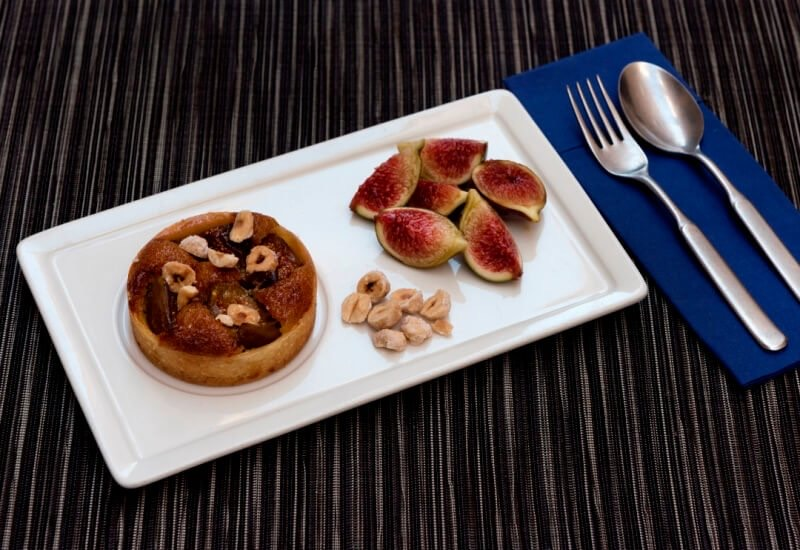

Domaći sladoled i slastice, napravljeno u Dubrovniku.
Slastičar Gianni radio je u restoranu 360 nagrađenom Michelinovom zvjezdicom, a onda otvorio svoju slastičarnicu. Sladoled, sorbete i kolače svaki dan ručno radimo od prirodnih sastojaka.



Od restorana 360 do vlastite slastičarnice.
Slastičar Gianni radio je u dubrovačkom restoranu 360, nagrađenom Michelinovom zvjezdicom. Odlučio je slijediti svoju strast i otvorio vlastitu slastičarnicu, specijaliziranu za ručno rađen gurmanski sladoled i slastice.
Kod nas ne kupujete samo sladoled. Istražujete okuse i uživate. Zato recepte stalno usavršavamo i širimo ponudu, a sve pripremamo od početka, od vrhunskih prirodnih sastojaka.
- mlijeko
- vrhnje
- Valrhona čokolada
- vanilija s Madagaskara
- sezonsko voće
„Najdraži dio vašeg posjeta nam je osmijeh na licu i onaj ‘mmm’ nakon prvog zalogaja.”
Za doručak, desert i šetnju gradom.
Proizvodi su svježi i svaki dan ručno rađeni. Nove okuse i recepte stalno uvodimo.

Sladoled i sorbeti
12 okusa sladoleda i sorbeta, uključujući veganske i bez glutena.

Dubrovački i francuski kolači
Tradicionalni dubrovački kolači i specijaliteti na francuski način, i u veganskoj i bezglutenskoj verziji.

Kava, kroasani i sokovi
Kava Cogito kakvu volite, hrskavi kroasan ili svježi bagel i prirodni sokovi.
i sorbeta
Dvanaest okusa. Za svakoga po nešto.
Poštujemo vaše osobne izbore i zdravstvene potrebe, zato pripremamo i veganske sladolede i sladolede bez glutena.
Terasa u kamenoj ulici Staroga grada.
Unutra svijetla vitrina sa sladoledom i kolačima, vani stolovi uz kamene zidove i tirkizna lanterna koja pokazuje put.




Svratite na kuglu ili dvije.
Tu smo svaki dan. Za prijedlog okusa, pitanje ili poseban zahtjev pišite nam ili nazovite.
Gianni · Stari grad
- Adresa
- Kneza Damjana Jude bb, 20000 Dubrovnik
- Radno vrijeme
- Ponedjeljak – nedjelja, 9 – 22 h
- Telefon
- 095 3926 323
Prije nego što svratite
Imate li veganski sladoled i sladoled bez glutena?
Da. Uz klasične okuse pripremamo i veganske sladolede i sladolede bez glutena, a kolače radimo i u veganskoj verziji i u verziji bez glutena.
Koliko okusa sladoleda imate?
U vitrini je 12 okusa sladoleda i sorbeta. Nove okuse i recepte stalno uvodimo, pa se ponuda mijenja.
Od čega radite sladoled?
Sve pripremamo od početka, od prirodnih sastojaka: mlijeka, vrhnja, Valrhona čokolade, vanilije s Madagaskara i sezonskog voća.
Gdje se nalazite?
U Starom gradu, na adresi Kneza Damjana Jude bb, 20000 Dubrovnik. Ispred lokala je terasa u kamenoj ulici.
Mogu li doći na doručak?
Možete. Uz kavu Cogito nudimo hrskave kroasane i svježe bagele te svježe cijeđene i prirodne sokove.
Mogu li predložiti okus ili poslati poseban zahtjev?
Naravno. Prijedlog okusa, pitanje, komentar ili poseban zahtjev pošaljite obrascem na ovoj stranici, na info@gianni-dubrovnik.com ili nazovite 095 3926 323.